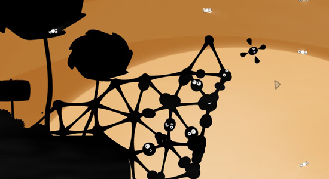
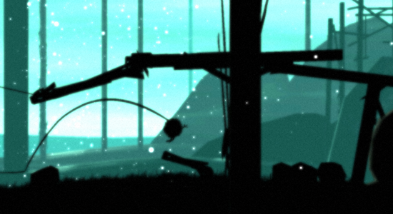
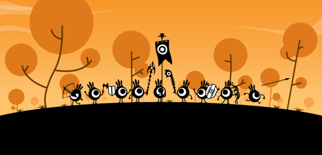
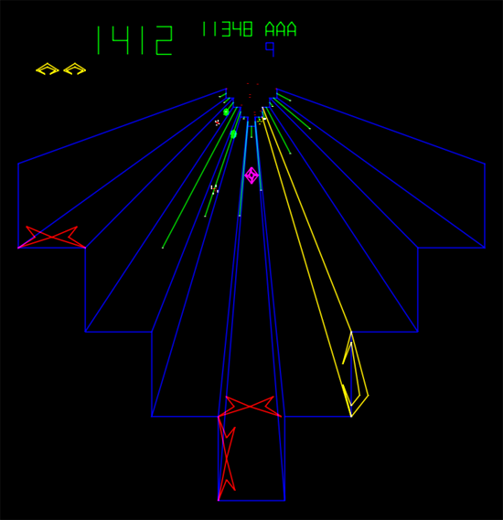
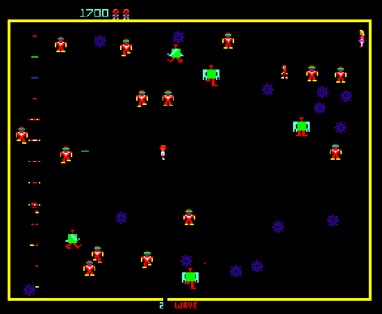

Silhouette Aesthetics in 2D Games
2011-03-27 02:17:50
status: inherit
author: Bryan
I'm particularly impressed with some of the larger creatures - the snapping one in the corridor actually seems to be genuinely frightening. Here's hoping for more of those moments. Also, the potential of environment scalability could be interesting in this context - the trailer does flash a brief scene of your ship appearing smaller than it usually does in an open space. Scrolling-tunnel gameplay does eventually get old and is certainly nothing new.
The release of this trailer seems to have generated a lot of excitement tempered slightly by comments on the unoriginality of the gameplay and the origin of the aesthetic. I'm all for old-school/simplistic/subtractive gameplay these days (within reason), but commentary on the silhouette aesthetic has definitely got me thinking.
The look is highly minimal, with a "shadow puppet" sort of contrast between flat black foreground images and saturated colors in the background. Gagne, an animator with decades of animation/film industry experience, has explored this visual style before, and Tartakovsky's work on Samurai Jack also comes to mind. However as this aesthetic seems to have become an indie game trend these days, it merits some game-specific analysis.

World of Goo did not utilize this look throughout the entire game, balancing a more colorful look with the high contrast look in certain levels, and actually tied in a somewhat unexpected "digital" art style at a certain point in the game. Regardless, the game art maintained its stylistic consistency well throughout. It's also a great game, incidentally.

Feist has won awards for its visual design (equal parts shadow puppets, Miyazaki sootballs, and Where the Wild Things Are) without even having been released yet. The vibe reminds me of indie exploration games like Knytt, which had an incredible atmosphere. The silhouette look and the music push what I've seen of the game so far in that direction as well.

Patapon for PSP is another obvious one and is pretty much a straight unadulterated expression of the silhouette look.
Am I missing any big ones?
Functionally, the shadow puppet/silhouette look seems to be, in a sense, a return to traditional arcade game aesthetics - albeit in inverse. Both vector and pixel-based graphics of games like Tempest and Robotron 2084 relied on the use of brightly colored foreground graphics over a black background, due to the challenge of providing visuals that would be as playable as possible within the constraints of current rendering limitations. Picture Robotron 2084 on a highly colorful backdrop with flat black characters, and voila, you essentially have the shadow puppet look.

The advantage of this look thus has much in common with its minimal ancestors. High contrast of in-game objects lends itself well to simple, straightforward gameplay, minimizing clutter. If the gameplay mechanics work to this end, playability can be improved by a look this simple and contrasted.

Other advantages are more representative of the times. Shadowed foregrounds and characters can create a highly moody look, which can be good for building a certain sense of atmosphere. Compare this with the look of LocoRoco for example: LocoRoco also has flat, simple foregrounds, but with a colorful style that is more reminiscent of well lit Katamari Damacy levels or Saturday morning cartoons - a style that doesn't lend itself to a compelling atmosphere (despite how good Katamari Damacy is).
Another positive of this visual style - it seems that it can only be good for development costs - the creation of flat shadow characters and environments would seem to be much less costly than creating a modern platformer look like Braid. Also, the de-emphasis of texture and depth can lead to increased polish in surface details or animation, as several of these games have demonstrated.
The bad: the shadow puppet look sacrifices surface detail for flat outlines, which starts to look the same after a while. I suspect these games could make better use of depth and texture to surfaces to accomplish a similar vibe with more variety. Connected with this is the possibility that this look will rapidly become clich?©.
Anyway, that all being said, I'm looking forward to seeing how Insanely Twisted Shadow Planet turns out. Did I mention I dislike the music? I really dislike the music.
Comments: